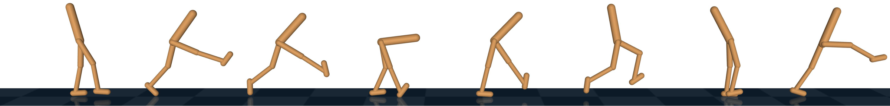
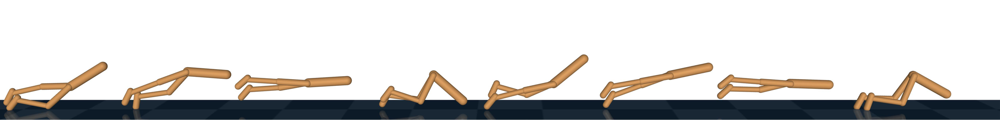
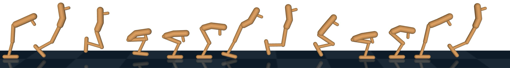
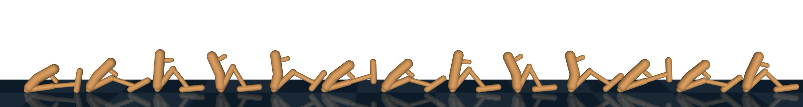
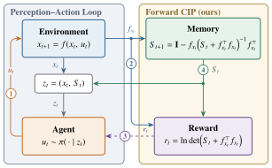
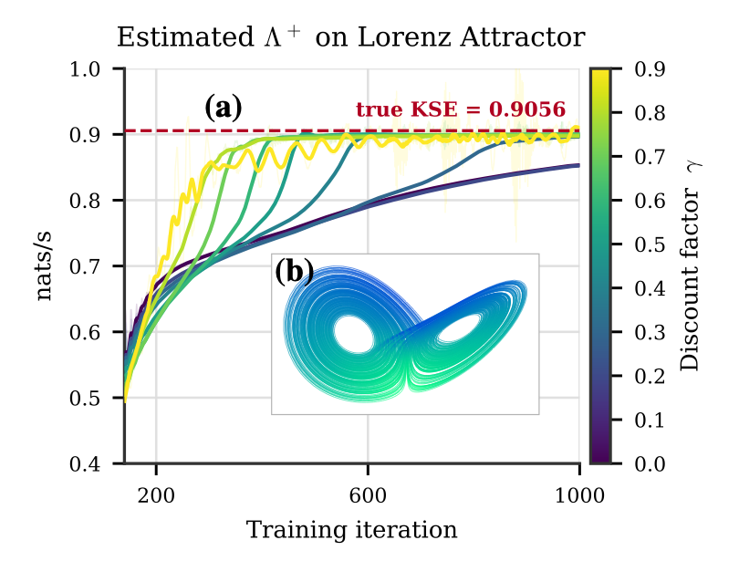
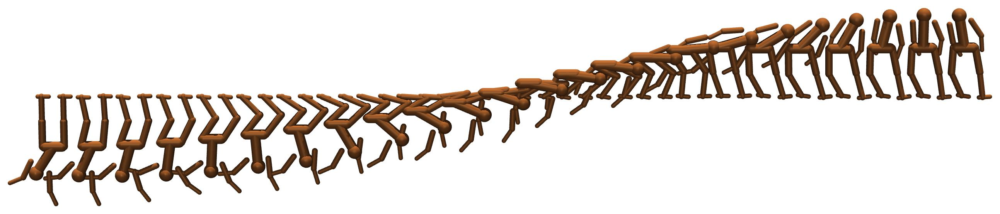

Bellman Meets Lyapunov Unsupervised Reinforcement Learning Through Mastering Chaos
Reward simplification on Walker and Hopper. Every policy is fine-tuned on the same minimal forward-velocity reward. Ours (green) pre-trains with F-CIP and keeps maximizing it during fine-tuning, yielding upright running and hopping. The velocity reward alone and the four intrinsic-motivation baselines (ICM, APT, DIAYN, SMM) collapse to scooting along the ground. No policy ever sees the hand-designed oracle reward.
Abstract
Reinforcement learning (RL) is a powerful paradigm for training agents, yet its success rests on domain expertise of human engineers who design informative reward signals for every new task. Unsupervised RL aims to replace this engineering with intrinsic motivation (IM): reward signals that emerge from the agent-environment interaction itself. Existing IM objectives, however, involve the selection of information variables, which re-introduces domain expertise the field has sought to eliminate. We introduce Forward CIP (F-CIP), an RL-native formulation of the Controllable Information Production (CIP) objective, which is defined by the system's dynamics alone and requires no such selection. We prove that F-CIP is compatible with RL and demonstrate its effectiveness with existing algorithms. Training agents with F-CIP results in unsupervised discovery of primitive behaviors such as balancing and maintaining controllability, which are essential for more complex robot behaviors. Paired with a minimal forward-velocity reward, our method produces coordinated gaits such as hopping and running which otherwise require reward engineering to learn.




Why CIP needed a forward-in-time form
The edge of chaos (EOC) is the boundary between stable and chaotic dynamics: states that are maximally unstable yet still controllable, like the upright stance of a humanoid. Controllable Information Production (CIP) makes this principle quantitative. It is the sum of positive open-loop Lyapunov exponents of the agent-environment system, so it rewards occupying the most dynamically sensitive regions rather than covering the state space uniformly.
CIP was previously optimizable only by sampling-based MPC planners. RL requires (i) a reward emitted incrementally during the forward rollout and (ii) a reward that is Markovian in the agent's state. CIP in its original form violates both: it is computed by a backward-in-time Riccati recursion whose increment at each step depends on the entire future trajectory.
Forward CIP (F-CIP) is a forward-in-time incremental decomposition of CIP. It exposes an instantaneous per-step reward, and it identifies an information matrix \(S_t\) as a sufficient statistic of the past, so augmenting the state with \(S_t\) exactly restores the Markov property. The forward iteration converges to the same quantity as the backward recursion, so no approximation is introduced.
Contributions
- Theory. A forward-in-time characterization of CIP as a sum of per-step increments (Lemma 1).
- Algorithm. A numerically stable log-domain iteration exposing a per-step reward and an information-matrix memory \(S_t\), casting CIP maximization as a standard RL problem.
- Experiments. The first RL agent trained directly on the CIP objective. Maximizing it drives the unsupervised discovery of standing behaviors, while combining it with a downstream objective yields coherent locomotion strategies such as hopping and running.
Method

CIP is the positive Lyapunov exponent sum \(\Lambda^{+}\) of the open-loop system \(f^{\ol}(x) = f(x, \sg(\pi(x)))\). Our key insight comes from the control-estimation duality: the backward Riccati recursion that defines CIP is a control-side object, and its estimation-side dual is a forward-in-time covariance iteration whose increments depend only on the current Jacobian \(\fx := \partial f/\partial x\,|_{(x_t,u_t)}\) and a propagated information matrix \(S_t\). Propagating the covariance in the \(\ln\det\) domain is numerically stable and exposes the per-step reward.
The reward carries the memory \(S_t\) in its signature, so it is not Markovian in \(x_t\) alone.
Bounded as \(0 \preceq S_t \preceq \I\), so it stays well-conditioned as a network input. Only its \(n(n+1)/2\) unique entries are carried.
With \(z_t := (x_t, S_t)\), the tuple \((\mathcal{Z}, \mathcal{U}, p_z, r)\) is a Markov decision process (Proposition 3), its undiscounted return telescopes to \(\ln\det\Sigma_T\), and
Maximizing the average reward of this MDP is therefore equivalent to maximizing CIP. In practice we optimize the discounted proxy with \(\gamma\) close to 1 using standard PPO, with Jacobians provided by MuJoCo-MJX.
Training with an extrinsic reward
For locomotion, the agent is first pre-trained for \(T_{\mathrm{pre}}\) iterations on the F-CIP reward alone. It is then adapted for \(T_{\mathrm{adapt}}\) iterations on the combined objective \(\hat r_t = r_t + \beta v_t\), where \(v_t\) is forward velocity and \(\beta\) warms up from zero to \(\beta_{\max}\). The hand-designed oracle reward is never optimized; it is used only at test time to evaluate task return.
Experiments
Our experiments address three questions. Q1. Does a learned value function converge to the true \(\Lambda^{+}\) on a known attractor? Q2. What behaviors are induced by maximizing F-CIP, with no extrinsic reward? Q3. Can F-CIP simplify reward engineering on locomotion tasks?
The learned value function recovers the true \(\Lambda^{+}\) of the Lorenz attractor
We validate our learned incremental estimator on the Lorenz attractor, whose \(\Lambda^{+}\) is known to be 0.906 nats/s. The estimate is extracted as \(\frac{1-\gamma}{2\Delta t}\mathbb{E}[V_\phi(z_t)]\), where \(V_\phi\) is learned by TD on trajectories sampled from the attractor. The estimator converges to the known value for every discount factor tested, and larger \(\gamma\) converges faster. The value function is largest near the splitting point between the two wings, where the local dynamics are most unstable, so it can be read as a local indicator of the "chaos-to-go".

Maximizing F-CIP alone produces swing-up and upright stabilization
With no extrinsic reward, F-CIP alone drives agents from a hanging pose to an upright stand. Table 1 reports the normalized extremity height (pendulum tip or gibbon head) over the final 10% of the episode, averaged over 10 seeds, on cart pole (CP), double pendulum (DP), triple pendulum (TP), and gibbon (G). F-CIP is the only objective that reliably reaches the upright configuration on all four systems. An average-reward PPO variant (APPO) matches the reliability of standard PPO.
Hopper and walker trained on the F-CIP reward alone, with no extrinsic reward. The agents learn to stand and balance without any task signal.

| Intrinsic Motivation Objective | ||||||
|---|---|---|---|---|---|---|
| System | F-CIP (PPO) | F-CIP (APPO) | DIAYN | SMM | ICM | APT |
| CP | 0.99 | 0.99 | 0.26 | 0.68 | 0.07 | 0.64 |
| DP | 0.99 | 0.99 | 0.44 | 0.06 | 0.05 | 0.25 |
| TP | 0.99 | 0.99 | 0.38 | 0.14 | 0.09 | 0.48 |
| G | 0.98 | 0.99 | 0.51 | 0.52 | 0.05 | 0.41 |
Table 1Comparison of IM objectives on pendulum environments. Mean extremity height over the final 10% of the episode, averaged over 10 random seeds, min-max normalized so that 0.0 is the initial hanging configuration and 1.0 is the fully upright pose. Skill-based baselines (DIAYN, SMM) are evaluated on their best skill.
F-CIP supplies the postural inductive bias that reward engineers otherwise encode by hand
Maximizing forward velocity alone describes the desired outcome but imposes no bias on how to achieve it, so RL agents collapse to "scooting" along the ground. The standard remedy is a hand-designed posture reward that requires knowledge of the robot. We show that F-CIP replaces that engineering: all baselines hold a low torso height and accrue near-zero task return, while our method learns to hop and run and recovers the majority of the oracle's task return despite never observing that reward.
| Hopper | Walker | |||||
|---|---|---|---|---|---|---|
| Method | Task Return ↑ | Fwd. Vel. (m/s) | Height (m) | Task Return ↑ | Fwd. Vel. (m/s) | Height (m) |
| Ours | 0.39 ± 0.38* | 1.47 ± 0.33 | 0.73 ± 0.15 | 0.60 ± 0.03 | 4.53 ± 0.11 | 1.19 ± 0.04 |
| Fwd. Vel. only | 0.00 ± 0.00 | 0.77 ± 0.16 | 0.33 ± 0.03 | 0.10 ± 0.04 | 4.41 ± 0.22 | 0.46 ± 0.10 |
| ICM† | 0.00 ± 0.00 | 1.52 ± 0.55 | 0.22 ± 0.05 | 0.09 ± 0.04 | 3.85 ± 0.41 | 0.48 ± 0.12 |
| APT† | 0.00 ± 0.00 | 1.63 ± 0.29 | 0.23 ± 0.07 | 0.10 ± 0.05 | 3.38 ± 1.14 | 0.47 ± 0.14 |
| DIAYN† | 0.00 ± 0.00 | 1.22 ± 0.17 | 0.29 ± 0.12 | 0.08 ± 0.03 | 3.29 ± 0.33 | 0.42 ± 0.09 |
| SMM† | 0.00 ± 0.00 | 1.12 ± 0.10 | 0.23 ± 0.04 | 0.09 ± 0.04 | 4.53 ± 0.51 | 0.45 ± 0.10 |
| Full reward (oracle) | 0.52 ± 0.12 | 1.04 ± 0.23 | 0.79 ± 0.09 | 0.78 ± 0.04 | 6.07 ± 0.33 | 1.13 ± 0.02 |
Table 2Reward simplification on Hopper and Walker. Mean and standard deviation over 10 evaluations of the trained policies. Ours pre-trains with F-CIP alone, then fine-tunes on the forward-velocity reward while continuing to maximize F-CIP. Task return is measured with the full hand-designed reward; bold marks the best among the methods. Forward velocity and torso height are diagnostics of the emergent gait. Each pretraining baseline (†) maximizes its intrinsic objective during pretraining and then replaces it with the velocity reward during fine-tuning. The large variance (*) on hopper is an artifact of the oracle metric: all 10 seeds hop upright, but some hop at heights outside the oracle's narrow height band and score zero. Our hopping policy travels about 40% faster than the oracle policy.
Discussion
Intrinsic motivation need not be confined to an exploration bonus. Coverage and surprise objectives are inherently geared toward exploration, so they serve almost exclusively as auxiliary signals. CIP targets edge-of-chaos states directly and produces useful behavior in both roles: as a primary objective it discovers self-righting with no external signal, and as an auxiliary term it supplies an inductive bias toward controllable instability that reward engineers otherwise encode by hand.
Limitations
Analytical Jacobians
The reward requires Jacobians of the dynamics. Differentiable simulators such as MuJoCo-MJX provide these efficiently, but physical reality offers none, so sim-to-real transfer will need either training entirely in simulation or Jacobians learned from data.
Memory grows quadratically
The memory matrix \(S_t\) grows quadratically in the state dimension, and every parallel environment must carry its own copy. Scaling to high-dimensional robots will require a compressed representation.
Degenerate maximizers
Like the noisy-TV problem of curiosity, CIP can be maximized by spinning freely or thrashing. Joint damping removed these optima in our environments, but a principled objective-level resolution remains open.